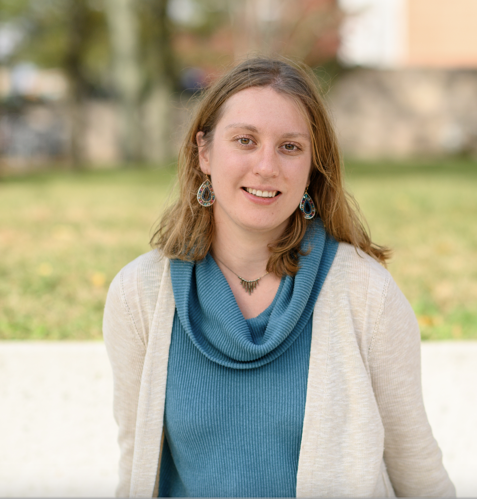

Assistant Professor, ORFE, Princeton University
Randomized numerical linear algebra · high-dimensional probability · stochastic optimization · robust iterative methods · tensor methods
I am an Assistant Professor in the ORFE Department at Princeton University, and an associated faculty member of the Program in Applied and Computational Mathematics (PACM) and the Center for Statistics and Machine Learning (CSML).
My previous academic story includes:
Earlier, I studied mathematics at Moscow State University (2007-2012, specialist degree, B.S.+M.S. equivalent), advised by Vladimir Bogachev, and at Moscow math school 57.
My research is in randomized numerical linear algebra and the mathematics of data science, with close connections to high-dimensional probability and stochastic optimization. I am interested in mathematically justified and effective randomized algorithms for large-scale data problems, especially in settings where the data or the problem has non-trivial mathematical structure, such as spectral decay, multimodality, nonnegativity, tensor structure, or structured noise.
This work has been supported by:
At Princeton, general information:
Earlier teachng:
My first name is the Russian version of Elizabeth. I like all versions of my name: please call me Liza, Lisa, Eliza, or Elizabeth, whatever you like the best. In case you were curious, Elizaveta is pronounced as "Ye (like in yellow) - lee - zah - VYE - tah". Standard pronunciation of Liza is "LEE - zuh".
In addition to doing research and explaining math for various audiences, I enjoy coding and playing with data. During my undergraduate time in Moscow, I completed two year CS program in Yandex Data Analysis school, it was such a great time.
My non-mathy interests include things that I find beautiful or challenging, such as, good stories, arts, oceans, mountains and cities, also finding and making perfect coffee.
“Poirot,” I said. “I have been thinking.”
“An admirable exercise my friend. Continue
it.”
(Agatha Christie, Peril at End House)